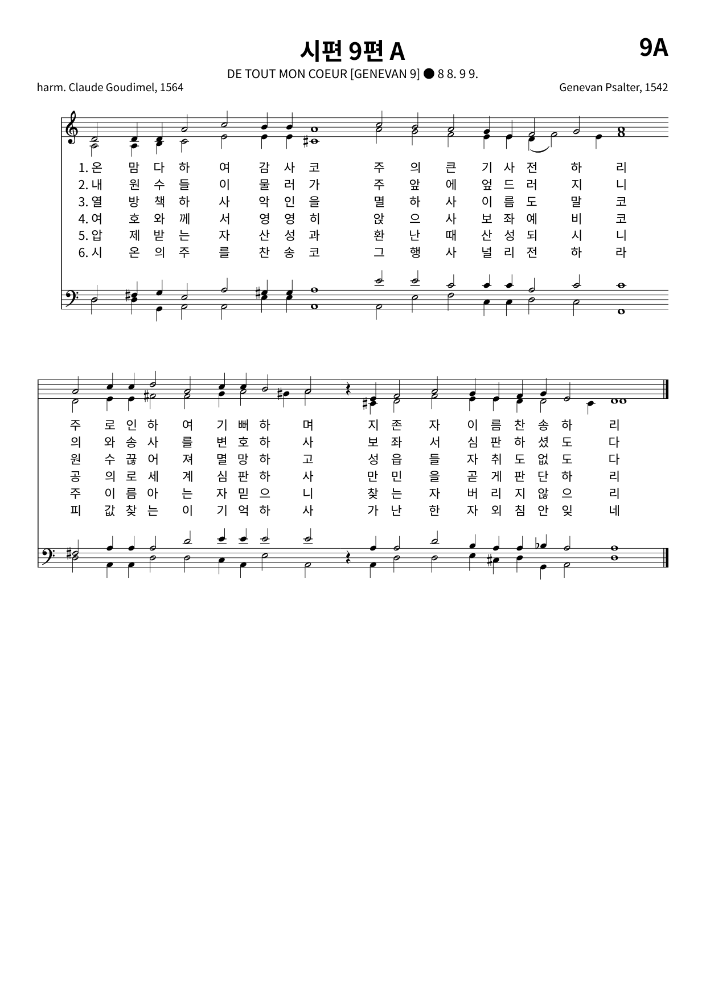

Psalm 9A
DE TOUT MON COEUR [GENEVAN 9] · 8 8. 9 9.
English title: With All My Heart I Thank Thee, LORD
Tune: Genevan Psalter, 1542 · Harmony: Claude Goudimel, 1564 · Lyrics: Korean adaptation of Psalm 9 from the Korean Revised Version (AI draft adaptation · not yet theologically reviewed) · 6 stanzas
Psalm 9 is divided into 2 tunes: A B · This tune contains stanzas 1–6 of the Psalm 9 lyrics.
Score PDF MusicXML (for printing) MusicXML (for accompaniment, with prelude and repeats) Read Psalm 9 (Korean Revised Version)
Score
← Psalm 8 ListAccompaniment (in preparation)Psalm 9B →
Lyrics (Korean)
Stanza 1
온 맘 다하여 감사코
주의 큰 기사 전하리
주로 인하여 기뻐하며
지존자 이름 찬송하리
온 맘 다하여 감사코
주의 큰 기사 전하리
주로 인하여 기뻐하며
지존자 이름 찬송하리
Stanza 2
내 원수들이 물러가
주 앞에 엎드러지니
의와 송사를 변호하사
보좌서 심판하셨도다
내 원수들이 물러가
주 앞에 엎드러지니
의와 송사를 변호하사
보좌서 심판하셨도다
Stanza 3
열방 책하사 악인을
멸하사 이름 도말코
원수 끊어져 멸망하고
성읍들 자취도 없도다
열방 책하사 악인을
멸하사 이름 도말코
원수 끊어져 멸망하고
성읍들 자취도 없도다
Stanza 4
여호와께서 영영히
앉으사 보좌 예비코
공의로 세계 심판하사
만민을 곧게 판단하리
여호와께서 영영히
앉으사 보좌 예비코
공의로 세계 심판하사
만민을 곧게 판단하리
Stanza 5
압제받는 자 산성과
환난 때 산성 되시니
주 이름 아는 자 믿으니
찾는 자 버리지 않으리
압제받는 자 산성과
환난 때 산성 되시니
주 이름 아는 자 믿으니
찾는 자 버리지 않으리
Stanza 6
시온의 주를 찬송코
그 행사 널리 전하라
피 값 찾는 이 기억하사
가난한 자 외침 안 잊네
시온의 주를 찬송코
그 행사 널리 전하라
피 값 찾는 이 기억하사
가난한 자 외침 안 잊네